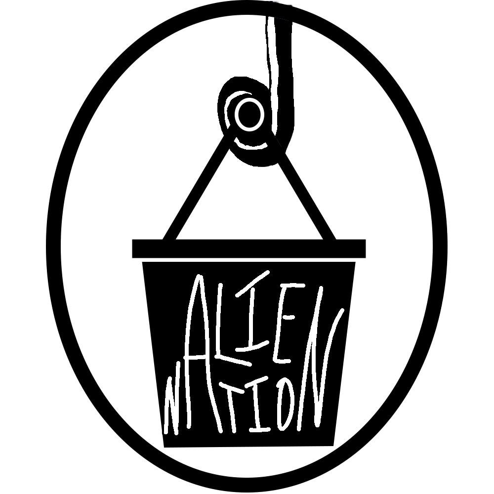

Project Overview
Project: alieNation, a 3D puzzle game
My Roles: Game Designer, Game Developer, Programmer
Timeline: Ongoing team project
The player wakes up on an alien planet with a job in the supermarket. In order to properly interact with customers, the player must decipher and interpret the alien's language. The language itself is English, but tone is indicated by color. This unique language mechanic helps reflect the feelings many people with autism experience when having conversations; being able to understand the literal meaning of words but having to decipher the tone and its subtext. Our team is working to bring more awareness towards a common autistic experience through our fun and engaging mechanics.

My Contributions
Design
The gameplay loop is similar to a visual novel, except the player will assign colors to words in their responses to give a word added meaning. Groceries will also accumulate on the conveyor belt as the player is interacting with the customer, and the interaction will not end until all groceries are clicked. I assisted with designing the loops and mechanics.
Development
The game is being made in Unity, so I am currently programming in C# to implement what we worked on as a design team. My priority is making the grocery belt mechanic and player interactivity with their surroundings. I am also helping implement the dialogue and color changing mechanics.